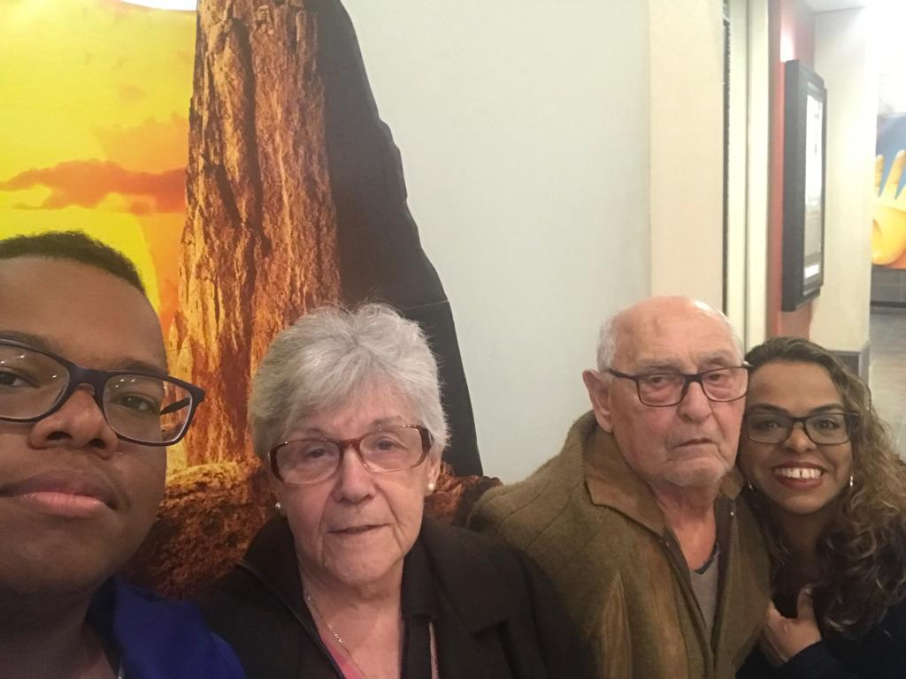

Victor Hugo Miliozi
Sobre mim
E ae pessoal?
Olá me chamo Victor Hugo, mas meus amigos me chamam de "Vitu" ou "Vic", aqui você irá conhecer um pouco sobre mim, caso gostem das minhas primeiras impressões, podem entrar em contato comigo, obtendo as informações aqui. Sou sempre disposto a conhecer pessoas novas e gosto de ter alguém por perto.Hobbies
- Videogames
- Overwatch
- Fifa 20
- Minecraft
- Esportes
- Assistir vídeos no YouTube e animes
Sem dúvida nenhuma meu maior hobbie é jogar videogame, me distraio e me diverto muito jogando com os meus amigos e até sozinho (mas com alguém sempre é melhor).
Os videogames que mais jogo são:
É um jogo fps (First Person Shooter) multijogador de 6 contra 6 que se passa em um mundo futurístico.

É um jogo de simulação de futebol que possui várias, possivelmente é o jogo de esporte mais conhecido e jogado do mundo atualmente.
É um jogo eletrônico sandbox de sobrevivência que nos dá um universo gigantesco de possibilidades e objetivos.

Eu gosto muito de praticar e ver esportes, apesar de não praticá-los com muita frequência. Além de fazer bem para saúde, eu acho muito legal e agradável. É inegável que a maioria dos brasileiros gostam de futebol, e eu não sou uma exceção, gosto muito de jogar com os "parça" e ver uma partida, porém prefiro jogar basquete, não sei explica o porquê, só sei que minha preferência vai para ele, mas se for pra ver um jogo, eu opto pelo futebol. Eu gosto de praticar vários outros esportes, mas esses dois são os que mais curto e acompanho; meu time no futebol é o Corinthians e no basquete é o Miami Heat.
Por fim, quando não estou jogando e não posso praticar algum esporte, eu assisto vídeos no YouTube pra passar um tempo e dar uma descontraída. Eu vejo muitos tipos diferentes de vídeos, mas se for pra colocar um youtuber favorito iria ser o Maicon Küster, gosto muito do humor que ele emprega nos vídeos dele, rio e me divirto bastante, você pode conhecer o canal dele clicando no botão do youtube. Também gosto muito de ver animes nesse tempo, mais abaixo eu fiz um top 5 dos meus animes favoritos.

Gostos pessoais
- Estilo musical
- Rap
- Trap
- Pagode
- Comidas
- Hambúrguer
- Panqueca
- Lasanha
- Animes
- Naruto Shippuden
- Kuroko no Basket
- HunterxHunter
- One-Punch Man
- Chuunibyou demo koi ga shitai
Eu sou uma pessoa bem eclética em relação a música, mas tenho umas preferências. Elas são:

O caso dos meus gostos para comida é o mesmo que meus gostos para estilos musicais, gosto de vários tipos de comida, mas umas para mim se sobressaem:
Eu até gosto de ver filmes e séries, mas gosto e vejo muito mais animes, então por isso prefiro listar os meus animes prediletos, só que dessa vez eu sei colocá-los em uma ordem de preferência, diferente dos casos anteriores.
Esse é o meu top 5:


Família e amigos
Família
Não tenho o que reclamar da minha família, ela é ótima pra mim. Como toda família temos desavenças, mas nenhuma o suficiente para nos separar por completo. Tem alguns integrantes que não tenho mais contato, porém acho que é normal isso acontecer estando em uma família grande. Os que moram comigo são a minha mãe, meus avós maternos e, é claro, meu cachorro Spook.
Amigos
Em relação a amizades, eu me considero uma pessoa de muita sorte, tenho vários amigos e para mim todos eles são verdadeiros. Eles fazem uma diferença enorme na minha vida e sou uma pessoa feliz graças a eles, não sei o que seria de mim sem os meus amigos. Considero todos muito importantes para mim, amo todos iguais, mas acho que devo dá um destaque para minha amiga Aimê.
Contato
- Email: vhmiliozi@gmail.com
- Telefone fixo: 3858-2384
- Celular: +55 (11)95968-0105